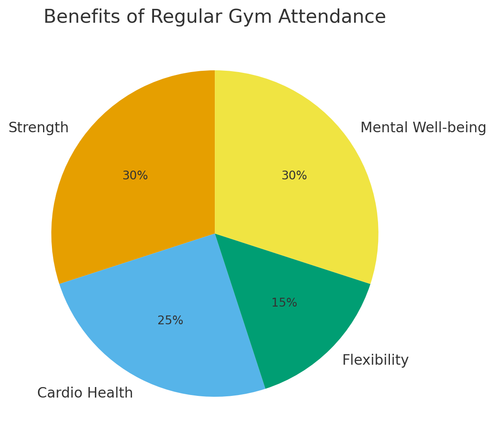

The Gym: A Gateway to Physical and Mental Well-Being
Introduction
The gym has become more than just a place to life weights- it's a hub
for personal growth, discipline, and community. Whether your goal is
to lose weight, gain muscle, improve endurance, or simply stay
healthy, the gym offers tools and resources to support your journey.
Benefits of Going to the Gym
a. Physical Health
Regular gym sessions help improve cardiovascular fitness, build
muscle strength, enhance flexibility, and support weight management.
Consistent training reduces the risk of chronic illnesses such as
heart disease, diabetes, and osteoporosis.
b. Mental Health
Exercise releases endorphins- natural mood boosters that help reduce
stress, anxiety, and depression. Many people find that gym workouts
improve their confidence and resilience.
c. Social Connection
Gyms provide a supportive environment where you can meet like-minded
people, attend group classes, and learn from experienced trainers.
Types of Workouts
a. Strength Training
This includes weightlifting, resistance bands, and bodyweight
exercises. Strength training builds lean muscle, improves posture,
and increases metabolism.
b. Cardiovascular Training
Treadmills, stationary bikes, and rowing machines improve heart and
lung function while burning calories efficiently.
c. Flexibility and Mobility
Yoga, stretching, and Pilates improve joint health and prevent
injuries, complementing strength and cardio workouts.

Figure 1: Benefits of Regular Gym Attendance
How to Get Started
a. Set Clear Goals
Decide whether you want to build muscle, lose weight, increase
endurance, or simply stay active. Specific goals will guide your
routine.
b. Learn Proper Technique
Start with lighter weights or simpler exercises to master form. If
possible, work with a trainer to avoid injury.
c. Create a Consistent Schedule
Consistency is key. Aim for at least 3-4 gym sessions a week,
gradually increasing intensity as you progress.
Common Mistakes to Avoid
Skipping Warm-Ups and Cool-Downs
Lifting too heavy, too soon
Comparing yourself to others instead of focusing on your own journey
Ignoring nutrition and rest
Nutrition and Recovery
Your results depend on more than just exercise. A balanced diet rich
in protein, healthy fats, and complex carbs fuels your workouts.
Adequate sleep and active recovery days prevent burnout and injuries.
Conclusion
The gym is more than just a place to exercise- it's a space for
transformation. By setting clear goals, learning proper techniques,
and maintaining consistency, you can unlock the physical and mental
benefits of regular workouts. Remember to avoid common mistakes,
prioritize nutrition and recovery, and enjoy the journey towards a
healthier, stronger you.